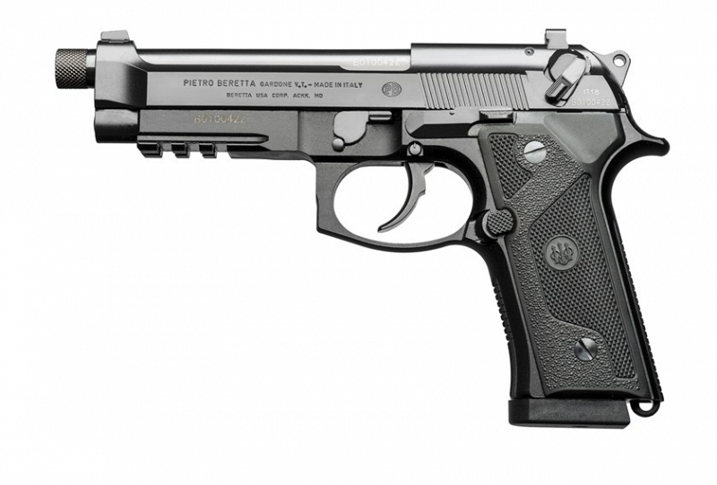
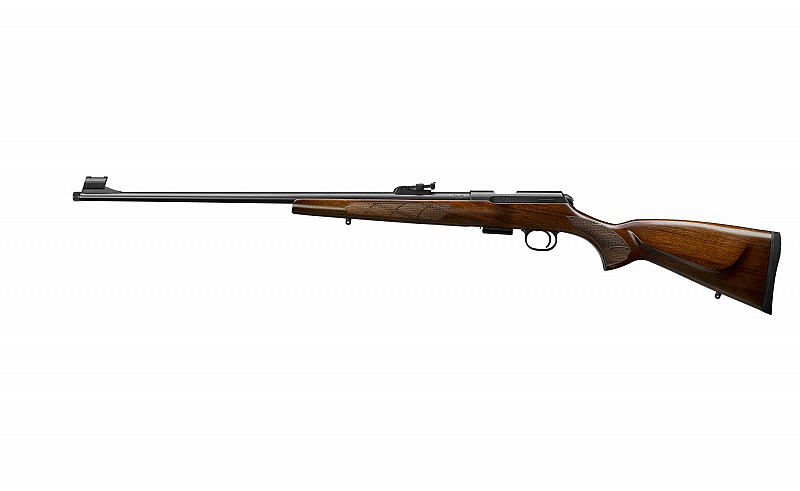

Armamentos de Guerra
| Código | Produto | Preço | Imagem | Vídeo |
| 0001 | PISTOLA BERETTA M9A3 PRETO 9MM
A Pistola M9A3 é o mais novo modelo projetado da família M9, oferecendo maior modularidade, durabilidade e ergonomia. |
R$25.460,00 |  | |
| 0002 | ESPINGARDA BOITO PUMP CAMUFLADA CAL. 12
A PUMP BOITO sempre foi uma das preferências tanto para caça quanto para os serviços de segurança, o atrativo desta arma além do seu design robusto, é seu mecanismo de extração e de engatilhgamento. |
R$7.495,00 |  |
|
| 0003 | RIFLE RIMFIRE CESKA ZBROJOVKA CZ457 LUX - 05 TIROS CANO 24 CAL. .22LR
O Rifle Rimfire Ceska Zbrojovka CZ457 LUX - 05 tiros cano 24 cal. .22lr ou simplesmente Rifle CZ457 Lux possui um design clássico de rifle de caça europeu. A coronha envernizada com bochecha é feita de nogueira turca de alta qualidade e apresenta xadrez gravado a laser. Miras de ferro tradicionais vêm como padrão. |
R$14.725,00 |  | |
| 0004 | REVÓLVER TAURUS 044 Cal. .44Mag
Esse revolver tem capacidade de 6 tiros, com um calibre .44 Magnum e cano de 8 3/8” polegadas com mira totalmente regulável, compensador de recuo integrado ao cano e além de possuir um duplo sistema de trancamento do tambor. |
R$9.405,00 |  |
|
| 0005 | RIFLE SMITH & WESSON MP15-22 CAL. .22 LR
O M & P15-22 possui um protetor de mão fino de M&P de 10 polegadas que incorpora o popular sistema Magpul M-LOK ™. O sistema M-LOK permite que os proprietários de espingardas personalizem facilmente seu M & P15-22 adicionando acessórios sem remover a proteção de mão. |
R$13.775,00 |  |
|
| 0006 | BGM-109 Tomahawk
O BGM-109 Tomahawk, também conhecido como Tomahawk Land Attack Missile, é um míssil de cruzeiro, subsônico, de longo alcance. |
R$6.686.400,00 |  |
|
| 0007 | Little Boy
Little Boy é o código de uma bomba atômica lançada sobre Hiroshima, no Japão, em 6 de agosto de 1945, segunda-feira, ao término da Segunda Guerra Mundial. |
R$12.840.925.698,00 |  |
|
| 0008 | Fat Man
Fat Man é código da bomba atómica lançada sobre Nagasaki, Japão, pelos Estados Unidos, em 9 de agosto de 1945. |
R$24.840.925.698,00 |  |
|
| 0009 | Gás Mostarda
Gás Mostarda, EA-1033, Levinstein, iperita, Kampfstoff, Mostarda de enxofre. É um agente químico de fórmula (Cl[CH2]2)2S e Cl-CH2-CH2-S-CH2-CH2-Cl. É uma arma química de ação vesicante, pelas lesões que causa na pele. Foi produzido pela primeira vez em 1822, na Inglaterra, por Despretz, na mistura de Etileno e Dicloreto de enxofre. |
R$840.925.698,00 |  |
|
| 0010 | Panzerkampfwagen IV
O Sd.Kfz. 161 Panzerkampfwagen IV ou Panzer IV foi um tanque médio projetado na Alemanha. Numericamente, foi o carro de combate mais importante empregado pelas forças alemãs durante a Segunda Guerra Mundial. |
R$5.420.925.698,00 |  |